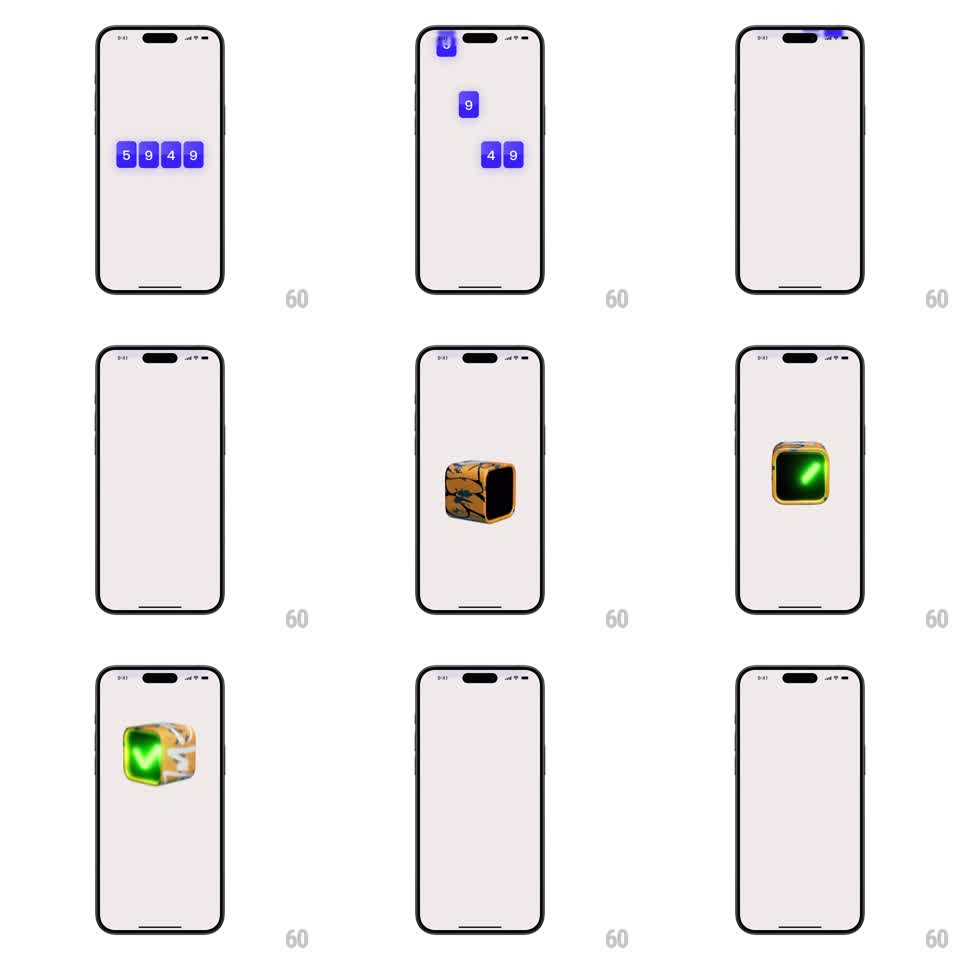

Media
Frame-by-frame

Rebuild this animation 1:1: Tilt's OTP verification - the entered digits fly together and merge into a metallic 3D cube, which pulses green when verification succeeds.

Rebuild this animation 1:1: Tilt's OTP verification - the entered digits fly together and merge into a metallic 3D cube, which pulses green when verification succeeds. ## Integration Integration: stack-agnostic spec - springs given as stiffness/damping, timed motions as duration + curve; map every value to your framework and animation library of choice. ## Scene The OTP screen: a row of digit boxes, each holding a typed digit. On submit, the digits lift out of their boxes, converge at center, and fuse into a brushed-metal 3D cube that tumbles slowly. On success, the cube pulses green. ## Motion spec Pattern: digit convergence into a 3D cube with success pulse. - Each digit box pops its digit out (scale 1 to 1.2, 120ms, staggered 40ms left-to-right) and the boxes collapse (fade + shrink, 200ms). - Digits arc toward center along ease-in paths (~400ms), shrinking as they travel, and are absorbed into the forming cube - the cube scales in from 0 (spring ~320/22) as the last digit lands. - The cube idles in a slow tumble (rotateX/Y, ~6s loop) with a moving specular highlight across its metal faces. - Success: the cube pulses - a green emissive ring sweeps across its faces, it scales 1.0 to 1.12 and back (spring ~350/20), and a soft green glow blooms behind it (fade 250ms); success copy fades up below (250ms). - Failure (if shown): the cube shakes (translateX +-8px, 3 cycles, 300ms) with a red tint flash, then splits back into digit boxes (reverse of entry). ## Calibration - The cube must inherit the digits' momentum - convergence paths and the cube's spring-in are one continuous motion. - The green pulse is emissive on the metal, not a flat color swap - the cube stays metallic. ## Reduced motion Digits fade out; a static checkmark appears with green accent. ## Don't miss - The tumble never stops during the success pulse - motion layers, never interrupts. - Glow stays behind the cube's silhouette; halo spillover looks like a rendering bug.